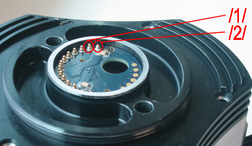
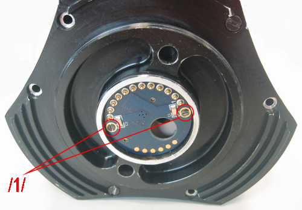
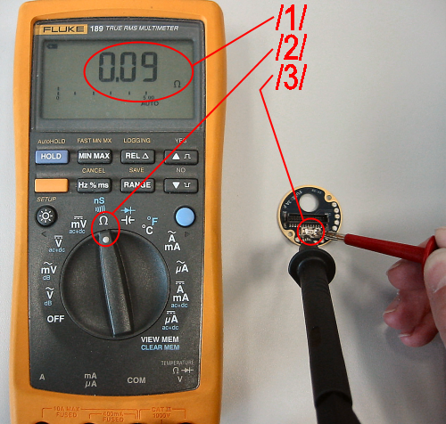

Troubleshooting
This document describes some problems and solutions with the SDH.Hardware related issues:
Spring contacts
Symptoms
- Blue power LED is off
- SDH does not move
- SDH does not respond to commands
Verification
There are several possible causes for this, one is the state of the spring contacts of the SDH which make the electrical connections.The following image shows a photo of the mechanical/electrical interface of the SDH, the so called FWA ("Flacher Wechsel Adapter").

In the image the spring contacts (e.g. the one marked with /1/) are OK, except for the one marked with /2/. The spring contact marked with /2/ has a mechanical defect which inhibits the spring mechanism from working. Therefore the contact is "not long enough" and thus no electrical contact is established for that contact. The "outermost" contacts 1 and 12 provide the electrical power +24V and GND respectively (see ./doc/SDH2_wiring.pdf).
Solution
- You can try to release the spring mechanism, e.g. with a sharp object, like a scalpel
- If you are not afraid of soldering then you can exchange the broken spring contact. If you do not have a new one available then you can probably reuse one of unused other ones. If you do not use the CAN connection e.g. then you can exchange the broken contact with one of the CAN contacts (again, see see ./doc/SDH2_wiring.pdf).
- If all else fails you can of course exchange the circular contacting board. Please contact SCHUNK in that case. The concerned circular PCB (Printed Circuit Board) is called "Platine FWS", Part No 9952383 (or "Flanschplatine" for its friends).
Fuse
Symptoms
- Blue power LED is off
- SDH does not move
- SDH does not respond to commands
Verification
There are several possible causes for this, one is a blown fuse.The following images shows how to get access to the fuse and how to measure it.

In the first image the two screws of the circular contacting board are marked with /1/. Please unscrew these and remove the circular board from the SDH.

The fuse (/3/) is on the back side of that board. You can check for a blown fuse as shown in the second image. Use a multimeter gauge that is capable of measuring electrical resistance (Ohm, see /2/). For a working fuse the resistance measured should be below 1 Ohm (e.g. 0.09 Ohm in /1/). If the fuse is blown then the measured resistance is much larger, typically several mega Ohm or "infinity".
Solution
- A broken fuse must be replaced. Use a compatible "3A F" (3 Ampere, fast) only
RS232 communication
Symptoms
- No proper communication with SDH or DSACON32m (tactile sensor controller) via RS232
- SDHLibrary reports timeout when communicating with the DSACON32m, e.g. (demo-dsa does not work saying: "demo-dsa main(): Caught exception from SDHLibrary: cDSAException: Timeout while reading preamble from remote DSACON32m controller. Giving up!").
Verification
There are several possible causes for this, one is a defect spring contact in the SDH, see above (Pins 2,3 and 4,5 are RS232 channel0 and 1 respectively). Another cause is a broken cable.To verify this without opening up the cabling you can do as follows:
- Start a RS232 terminal program like Windows Hyperterminal oder Linux minicom on the RS232 interface connected to the tactile sensors of the SDH
- The communication parameters are: 115200 kBit/s, 8 Data Bytes, No parity, 1 Stop Bit (8N1), Flow Control=Software
- (Re-)start the SDH
- On power up the DSACON will try to detect a terminal program on the other end of its RS232 line with the VT100 "Detect Terminal Presence"
- If a terminal program is detected then a shell like console program for interactive commanding of the DSACON will be started
- You can now type in ASCII commands like "help" + Return in the terminal program on the PC and you will see ASCII answers from the DSACON
Solution
- Repair/replace broken cable / spring contact
Software related issues:
To be written...|
dirk.osswald@de.schunk.com
|
|---|